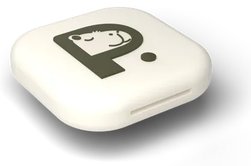

D · Mock E · There is no Ignore button (Fable's pick)
It's on your Pauzie, wherever you left it. Most urges don't survive the walk.
You've reached your limit
1 hour on Instagram today
Instagram is paused
Tap your Pauzie to unlock.
